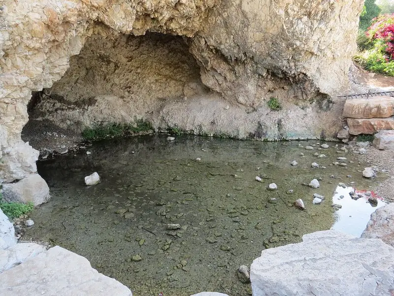
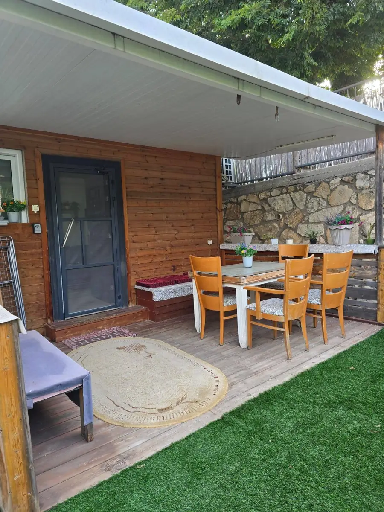
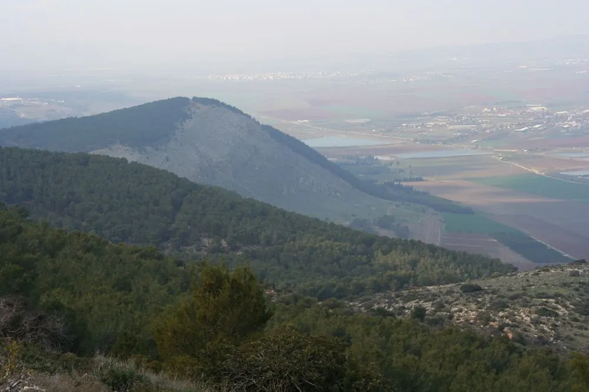
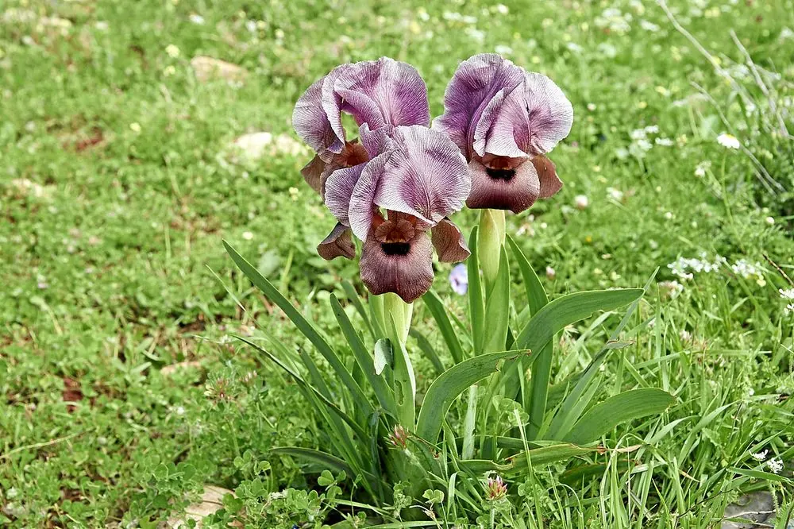
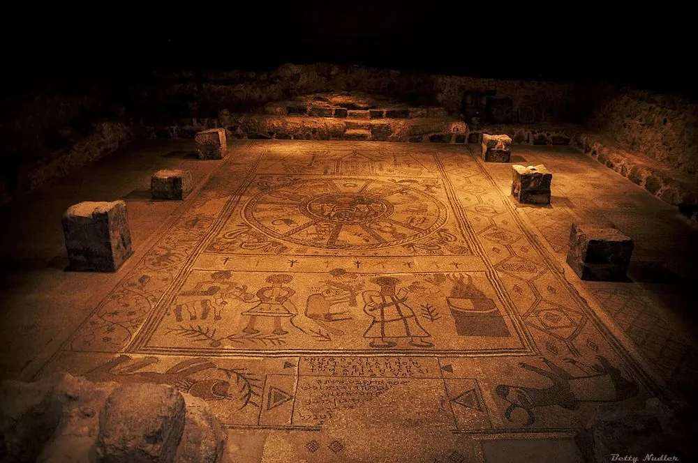
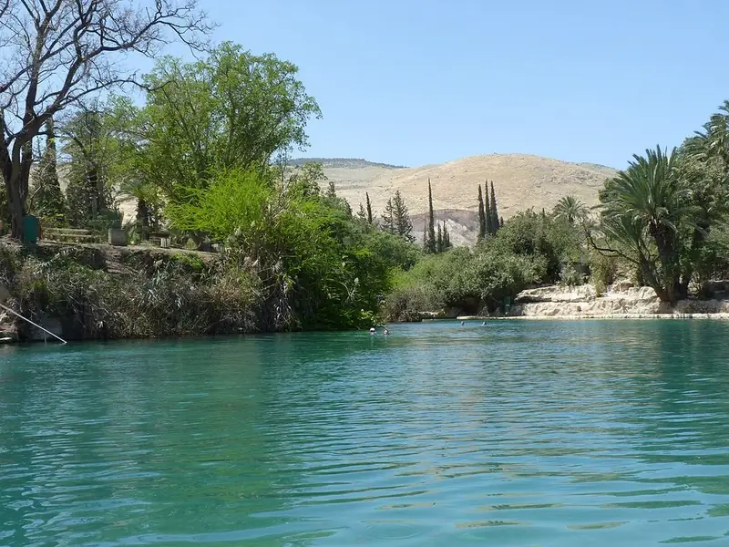

1כ-10 דקות
מעיין חרוד
מעיין שנובע ממערה למרגלות הגלבוע, עם מדשאות גדולות ועצים. מקום מצוין לפיקניק עם ילדים.
ניווט בוויז ←יחידת אירוח עם חצר דשא פרטית, מרפסת עץ וחדר לילדים. מתאימה לזוג או לזוג עם עד 3 ילדים, בשקט של הגלבוע.
צימר אדר נמצא במושב גן נר, ממש למרגלות הגלבוע. יש בו חדר זוגי, חדר נוסף לילדים, סלון ומטבח מלא, ובחוץ מרפסת עץ מקורה עם פינת אוכל וחצר דשא פרטית.
הצימר מתאים לזוג שמחפש שקט, וגם למשפחה עם עד 3 ילדים. בעונת הקיץ (ורק בה) יש בריכה בצימר, ובנוסף אפשר ליהנות מבריכת היישוב גן נר.
אחרי יום של טיולים באזור חוזרים לפינה חמימה ונקייה, עם כל מה שצריך כדי להרגיש בבית.

פינת ישיבה מוצלת בגינה
בעונת הקיץ בלבד: בריכה בצימר, ובנוסף בריכת היישוב גן נר
כיריים, תנור, מקרר גדול
נעים בקיץ ובחורף
לערבים רגועים בפנים
WiFi בכל היחידה
נוח במיוחד למשפחות
ארוחות בחוץ, במרפסת העץ המקורה
חדר זוגי מעוצב, מגבות מקופלות כברבורים, ערב שקט במרפסת. בלי תוכניות, רק לנוח.
חדר נפרד לילדים, חצר דשא שאפשר לשחרר אליה אותם, מטבח מלא ומכונת כביסה.
בסיס נוח לטיולים בגלבוע ובעמק המעיינות, כולל עונת הפריחה בחורף ובאביב.
הצימר נמצא בגן נר, בפינה הצפון-מערבית של הגלבוע. רוב האתרים המוכרים באזור נמצאים במרחק נסיעה קצר. לחצו על מספר במפה כדי לקפוץ לאתר.
↔ גררו את המפה לצדדים
זמני הנסיעה משוערים מהצימר. מפה: © תורמי OpenStreetMap, SRTM · סגנון © OpenTopoMap (CC-BY-SA)

מעיין שנובע ממערה למרגלות הגלבוע, עם מדשאות גדולות ועצים. מקום מצוין לפיקניק עם ילדים.
ניווט בוויז ←
כביש 667 מתפתל לאורך רכס הגלבוע. בדרך יש תצפיות על עמק יזרעאל ועמק בית שאן, חניוני פיקניק ושבילי הליכה.
ניווט בוויז ←
בסוף החורף, בערך בפברואר–מרץ, פורח על הרכס אירוס הגלבוע הסגול, פרח נדיר שמגיעים לראות מכל הארץ.
ניווט בוויז ←
רצפת פסיפס מרהיבה מהמאה ה-6, עם גלגל המזלות וסיפור עקדת יצחק. מבנה מקורה, נעים גם ביום חם.
ניווט בוויז ←
בריכות טבעיות בצבע טורקיז, עם מים בטמפרטורה נעימה כל השנה, דשא ועצי דקל. אחד המקומות היפים בארץ לרחצה.
ניווט בוויז ←עיר רומית-ביזנטית שלמה: רחוב עמודים, תיאטרון, מרחצאות, ותל עתיק שממנו רואים את כל העמק.
ניווט בוויז ←לזוג, או לזוג עם עד 3 ילדים. יש חדר זוגי וחדר נוסף לילדים.
כן, בעונת הקיץ בלבד. בקיץ יש בריכה בצימר עצמו, ובנוסף אפשר ליהנות מהבריכה של היישוב גן נר, שגם היא פתוחה רק בקיץ. מחוץ לעונה אין בריכה פעילה. לפרטים על מועדי הפתיחה כדאי לשאול את אילנה.
כן. יש חדר נפרד לילדים, חצר דשא פרטית, מטבח מאובזר ומכונת כביסה.
בהחלט. יש מטבח מאובזר עם כיריים, תנור, מקרר גדול וקומקום, ובחוץ יש פינת אוכל במרפסת ופינת מנגל.
ברחוב רקפת 153 במושב גן נר, בפינה הצפון-מערבית של הגלבוע. מעיין חרוד נמצא כ-10 דקות נסיעה מהצימר, וגן השלושה כ-25 דקות.
שולחים הודעה בוואטסאפ או מתקשרים לאילנה, 050-4365120. היא תבדוק תאריכים פנויים ותיתן את כל הפרטים.
ספרו לאילנה על התאריכים ועל מספר האורחים, והיא תחזור אליכם עם כל הפרטים.
050-4365120רחוב רקפת 153, גן נר